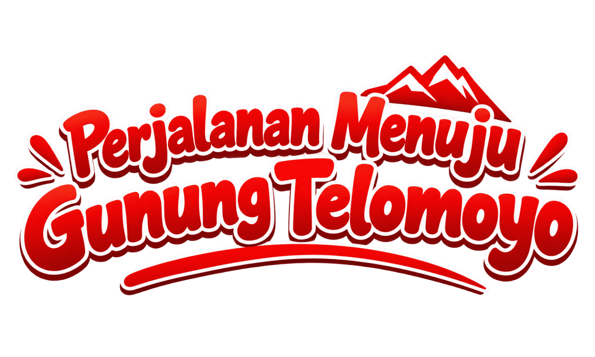
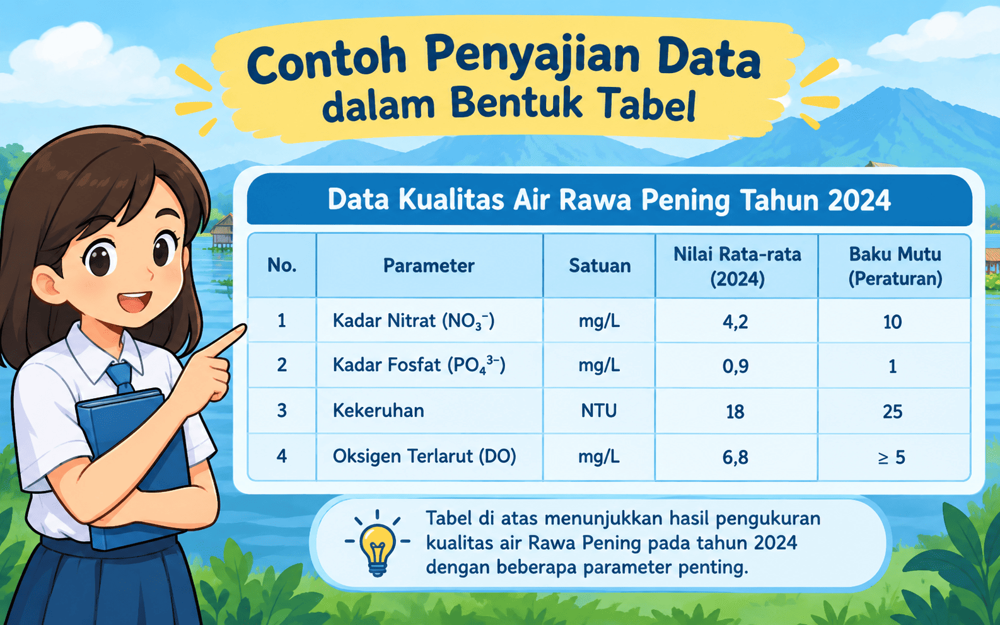
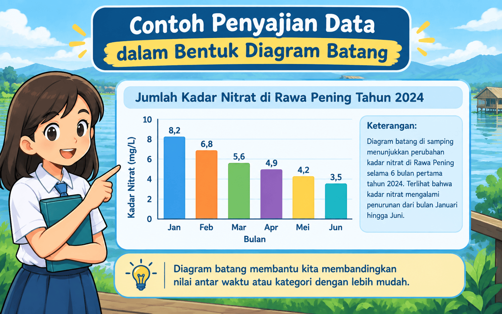
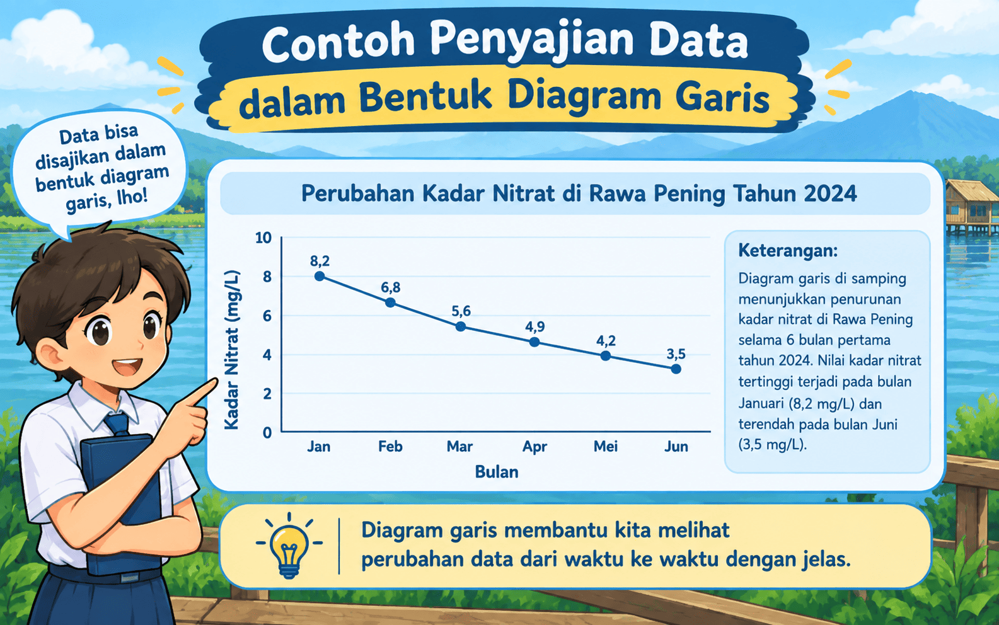
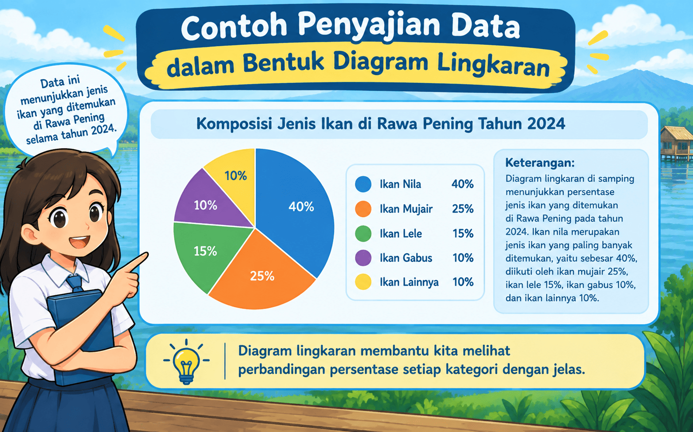
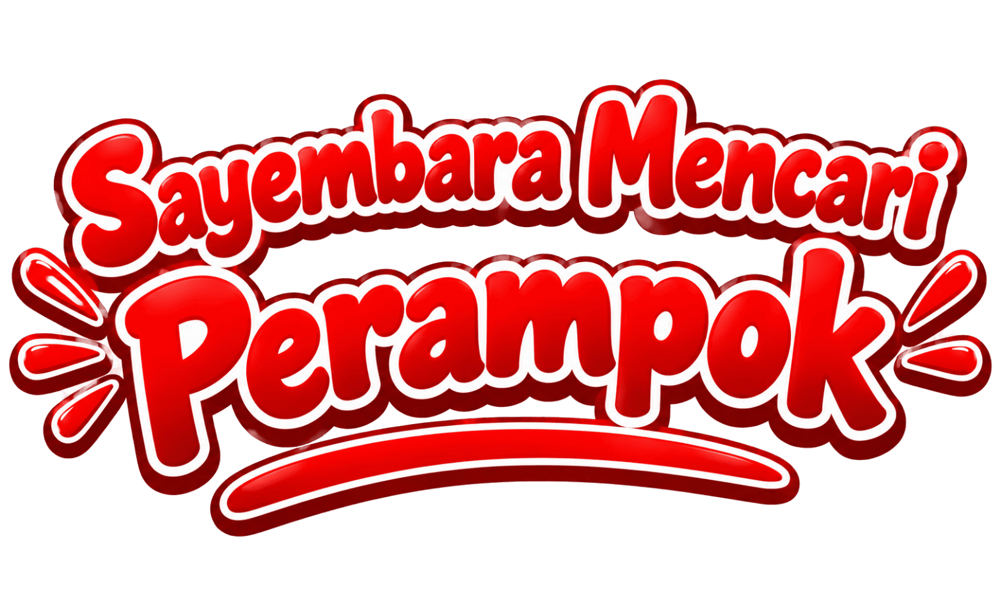
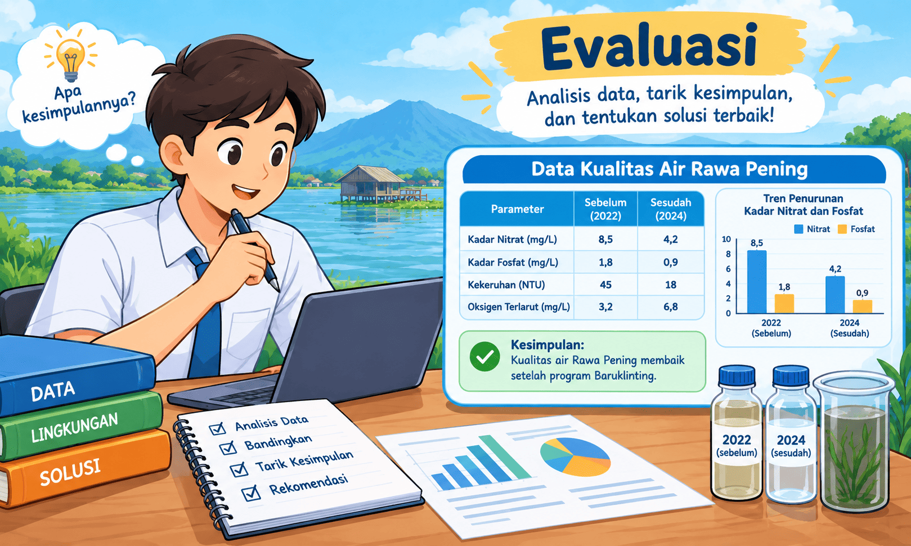

Pilih karakter pendampingmu:

Di Bukit Cinta, Baruklinting menemukan peti berisi wasiat kuno. Ia harus memahaminya sebelum mendaki Gunung Telomoyo. Bantu Baruklinting memahami wasiat itu!
Statistika adalah ilmu tentang cara mengumpulkan, mengolah, menyajikan, dan menganalisis data. Data adalah kumpulan fakta/keterangan (angka atau kategori) yang dikumpulkan dari suatu pengamatan.
Alur pengolahan data:
Pilih metode yang paling tepat sesuai jenis data yang dibutuhkan.
Tabel — menyusun data dalam baris & kolom.

Diagram Batang — membandingkan jumlah antar kategori dengan batang.

Diagram Garis — menunjukkan perubahan data dari waktu ke waktu.

Diagram Lingkaran — menunjukkan persentase/perbandingan bagian terhadap keseluruhan.

Setelah data terkumpul, data diurutkan, dikelompokkan, dan dihitung (misalnya jumlah, rata-rata \( \bar{x}=\dfrac{\sum x_i}{n} \), nilai tertinggi, dan nilai terendah) sebelum disajikan dalam bentuk tabel atau diagram.
Pak Guru ingin mengetahui jenis olahraga favorit 30 siswa kelas VII untuk menentukan kegiatan ekstrakurikuler baru.

Di lapangan desa, warga ramai mencari pemilik jejak kaki misterius. Nyi Latung, nenek baik hati, kebingungan mendata ukuran kaki warga. Bantu ia mengumpulkan & menyajikan data ukuran sepatu!
Langkah: (1) Beri judul tabel, (2) buat kolom nama & ukuran sepatu (cm), (3) carilah data 5 warga di sekolahmu, (4) isikan ke tabel.
Langkah: (1) sumbu mendatar = nama, (2) sumbu tegak = ukuran sepatu (cm), (3) gambarkan tinggi batang sesuai data.
Langkah: (1) sumbu mendatar = nama, (2) sumbu tegak = ukuran sepatu (cm), (3) buat titik lalu hubungkan menjadi garis.

Warga marah karena Nyi Latung dituduh tahu siapa perampoknya. Baruklinting menancapkan lidi — siapa pun tak mampu mencabutnya, hingga ia mencabutnya sendiri dan Banjir Bandang pun terjadi, mengubah desa menjadi Rawa Pening. Selesaikan tantangan terakhir ini agar kamu dan Nyi Latung selamat!
KKTP (Kriteria Ketercapaian Tujuan Pembelajaran) berada pada rentang 80–86. Murid dinyatakan naik kelas jika maksimal hanya 2 mapel bernilai di bawah rentang KKTP.
Langkah 1 — Susun Tabel Nilai
Kamu dan Nyi Latung selamat naik perahu, dan Baruklinting berhasil sampai di Gunung Telomoyo bertemu ayahnya, Ki Hajar Salokantara!
Selamat! Kamu berhasil mengikuti perjalanan Baruklinting!